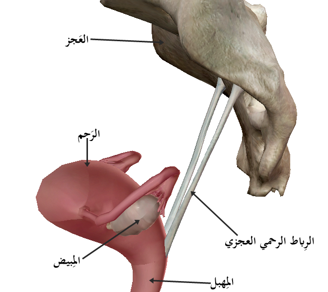

Página 12 · Parte D · Banca
Depois de fechar a cúpula: o que fazer com o uterossacro
Depois de fechar a cúpula vaginal na histerectomia total abdominal, qual estrutura de suspensão você reposiciona — e para quê?
Depois de retirar o útero e fechar a cúpula
Paciente submetida a histerectomia total abdominal; após fechamento da cúpula vaginal, pergunta-se o próximo passo.
Sequência: retirada do útero → fechamento da cúpula vaginal.
O que fica solto no aparelho de suspensão
Após a retirada do útero, estruturas que estavam presas ao útero ficam relativamente soltas — em especial elementos do aparelho de suspensão. A lista completa dos três ligamentos não se reabre (↗A12); o ângulo novo é o gesto cirúrgico.
Sutura dos uterossacros à cúpula
Passo seguinte de bom tom (não unânime entre cirurgiões na prática real): fixação desses ligamentos, visando prevenir prolapso de órgãos pélvicos / prolapso de cúpula. O próximo passo gabaritado: sutura dos ligamentos uterossacros à cúpula vaginal.
O uterossacro integra o aparelho de suspensão na região posterior. Fixar o uterossacro à cúpula visa evitar prolapso de cúpula vaginal. Com o mapa de suspensão e o passo a passo, o gabarito “aparece”.
O que esta parte pagou — e o que não pagou
| Eixo | Status |
|---|---|
| Artéria uterina + ureter (origem, cruzamento, ~2 cm, rio/ponte, clampe) | PAGO — quita A12 [009] |
| Conjugatas / estreitos / pelve maior×menor | NÃO PAGO — zero na fonte da parte 2; permanece no pacote da parte 1 |
| Fístula / Hodge / reensino de paredes-chão-músculos-lista de 3 ligamentos | FRONTEIRA — zero |
| Links vivos | A5 HPP · A7 incontinência · A8 prolapso ampliado · A12 parede/chão/suspensão |

Anatomia do uterossacro — estrutura usada na fixação da cúpula (não foto intraoperatória de HTA).
Uterosacral ligament anatomy. By علاء (Alaa), via Wikimedia Commons, licensed under CC BY-SA 4.0. Source: https://commons.wikimedia.org/wiki/File:Uterosacral_ligament.png
Quiz — fixação
Após fechamento da cúpula na HTA, o próximo tempo gabaritado na discussão de banca é:
- Gabarito B. O próximo tempo gabaritado é a sutura dos uterossacros à cúpula vaginal (suporte apical).
- (A) ligadura da ovárica direita não é passo seguinte obrigatório da cúpula.
- (C) reabrir sínfise é absurdo — não se reabre parede óssea.
- (D) Papanicolaou é do colo (ecto+endo), não endométrio fúndico; e não é passo de histerectomia.
- Por que cair em A: “vaso” parece passo cirúrgico, mas o tempo de cúpula é suspensão, não vasos.
Fixar o uterossacro à cúpula visa principalmente:
- Gabarito B. A fixação do uterossacro à cúpula visa evitar o prolapso de cúpula vaginal (suporte apical posterior).
- (A) drenagem linfática é tema da estação, não da fixação.
- (C) artéria uterina é vaso pré-existente — não se “cria” com sutura.
- (D) veias ováricas são assimétricas por natureza; sutura não as simetriza.
- Por que cair em A: “uterossacro” pode confundir com cadeia linfática próxima, mas o objetivo é mecânico.